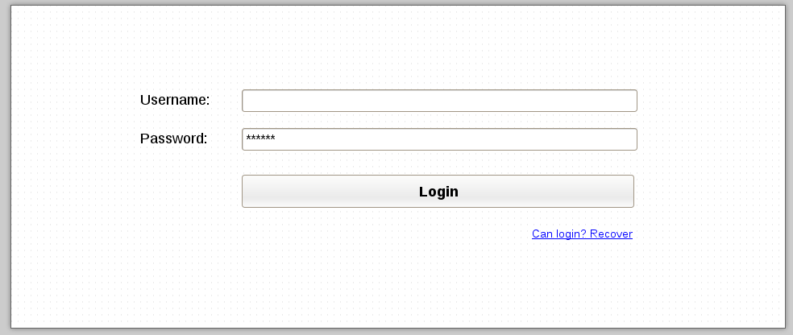

OAUTH2 Fantastico IDP
Fantastico provides a default Identity provider which provides required APIs for managing users. As other Fantastico extensions APIs, idp APIs are secured with OAUTH2 tokens. In order to activate IDP extension for Fantastico follow OAuth2 Identity Provider.
APIs
| URI | Verb | Required scopes | Description | Headers |
| /api/latest/oauth-idp-profile | GET | user.profile.read | Retrieves information about authenticated user. | Authorization: Bearer <oauth2_token> |
| /api/latest/oauth-idp-profile | POST | Creates a new user profile. | ||
| /api/latest/oauth-idp-profile | PUT | user.profile.update | Updates an existing user profile. | Authorization: Bearer <oauth2_token> |
| /api/latest/oauth-idp-profile | DELETE | user.profile.delete | Updates an existing user profile. | Authorization: Bearer <oauth2_token> |
| /api/oauth/profile/me | GET | user.profile.read, user.profile.read.person | Retrieves information about authenticated user (based on the access token). | Authorization: Bearer <oauth2_token> |
| /api/latest/oauth-idp-person/:person_id | PUT | user.profile.update | Updates existing person details . | Authorization: Bearer <oauth2_token> |
| /oauth/idp/ui/login?redirect_uri=/test-url | GET | Returns the markup for login screen. | ||
| /oauth/idp/login?redirect_uri=/test-url | POST | Authenticate the user, generates a token and passes it to redirect uri. | ||
| /oauth/idp/ui/cb | GET | A very simple callback which extracts the access token received and prints it on screen. |
User profile data

Login frontend
Developers can easily customize the login screen by providing a template which must be applied to login screen. A typical custom login template is presented below:
{% extends "login.html" %}
{% block head %}
<title>Fantastico IDP default login</title>
<!-- Latest compiled and minified CSS -->
<link rel="stylesheet" href="//netdna.bootstrapcdn.com/bootstrap/3.0.3/css/bootstrap.min.css">
<link rel="stylesheet" href="//netdna.bootstrapcdn.com/bootstrap/3.0.3/css/bootstrap-theme.min.css">
<script src="//code.jquery.com/jquery-2.0.3.min.js"></script>
<script src="//netdna.bootstrapcdn.com/bootstrap/3.0.3/js/bootstrap.min.js"></script>
{% endblock %}
{% block body_header %}
<div class="row" align="center">
<div class="col-md-4">
<div class="panel panel-default">
<div class="panel-heading">
{% block panel_header %}
<h1>Login to fantastico</h1>
{% endblock %}
</div>
{% endblock %}
{% block body_footer %}
<div class="panel-footer">
<h4>Created by Radu Viorel Cosnita</h4>
</div>
</div>
</div>
</div>
{% endblock %}
You can find documentation on how to configure custom login template on Fantastico settings.
Administrator account
When you first activate the extension and you syncdb an administrator account is created:
username = "admin@fantastico.com"
password = "1234567890"
This account can be used to access various applications provided by various Fantastico extensions.
Users and persons
At the current moment a person can only have one user associated. Person details must be retrieved using oauth-idp-profile complex representation (see: ROA (Resource Oriented Architecture)). Moreover, when a new user is created a new person is created automatically and assigned to that user. Initially created person has some default values in order to allow very smooth account creation in various applications.
Default oauth callback
By default, the oauth idp also provides a callback page which displays received hash parameters. In order to allow reusage of this callback in mobile apps this callback page sends fantastico.oauth.cb.message message to it’s parent frame with the following body:
{
"messageType": "fantastico.oauth.cb.message",
"url": "<current url include hash fragment>",
"access_token": "<currently received access token>",
"expires_in": "<the number of minutes in which access token will expire>"
}
In case of an error the same message is sent with error attributes received in hash fragment.
Technical summary
Password storage
It is recommend that each identity provider holds hashes of passwords instead of plain text passwords. Foreasily development of new Identity Providers, Fantastico provides a contract for easily hashing passwords.
- class fantastico.oauth2.passwords_hasher.PasswordsHasher[source]
This class provides an abstract contract for password hasher. A password hasher is an algorithm that generates a strong hash starting from a plain text string.
- hash_password(plain_passwd, hash_ctx=None)[source]
This method must be overriden in order to provide concrete hashing algorithm.
Parameters: - plain_passwd (str) – The plain password for which we want to obtain a strong hash.
- hash_ctx (fantastico.utils.dictionary_object.DictionaryObject) – An optional hashing context which contains additional attributes required by hashing algorithm. E.g: sha512 with salt.
Returns: The strong hash generated.
Return type: str
- class fantastico.oauth2.sha512salt_passwords_hasher.Sha512SaltPasswordsHasher[source]
This class provides the sha512salt implementation for password hashing. In addition, the result is encoded using base64. In order to use this hasher try the code snippet below:
sha512_hasher = PasswordsHasherFactory().get_hasher(PasswordsHasherFactory.SHA512_SALT) hashed_passwd = sha512_hasher.hash_password("abcd", DictionaryObject({"salt": 123}))
- hash_password(plain_passwd, hash_ctx=None)[source]
This method provides the sha512 with salt algorithm for a given plain password. In addition, the hash is base64 encoded.
- class fantastico.oauth2.passwords_hasher_factory.PasswordsHasherFactory[source]
This class provides a factory used to obtain concrete password hasher providers. At the moment, the following hashers are supported:
- SHA512_SALT
- get_hasher(hash_alg)[source]
This method obtains a concrete passwords hasher provider based on the requested hash algorithm. See the constants defined in this factory in order to find out supported algorithms.
Parameters: hash_alg (str) – A string uniquely identifying desired hash algorithm. Returns: A concrete passwords hasher provider. Return type: fantastico.oauth2.passwords_hasher.PasswordsHasher Raises fantastico.oauth2.exceptions.OAuth2TokenEncryptionError: In case the requested algorithm is not supported.